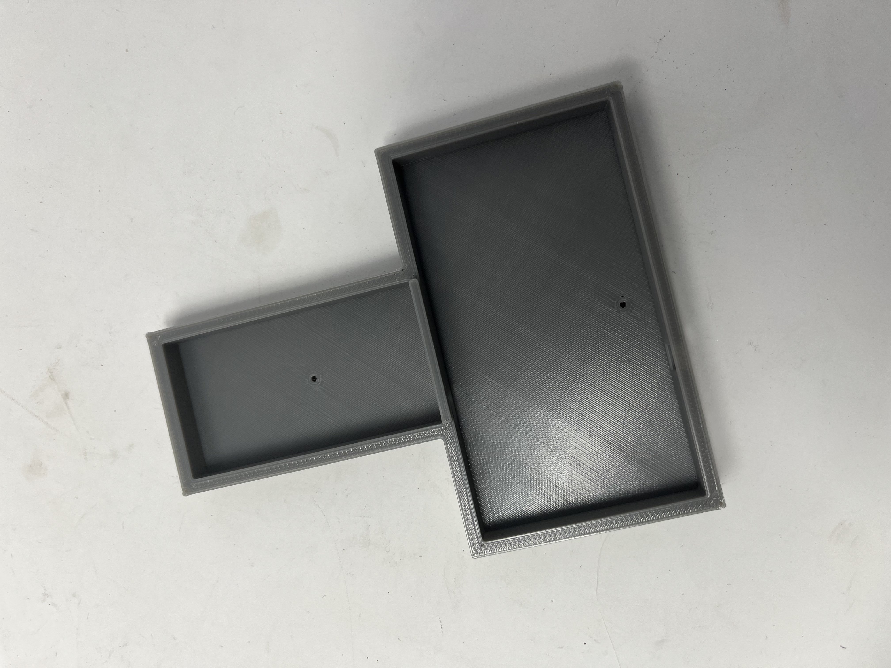
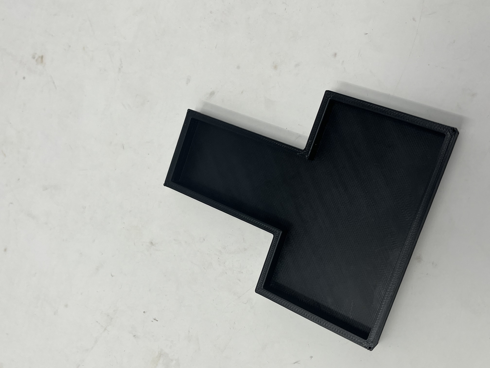
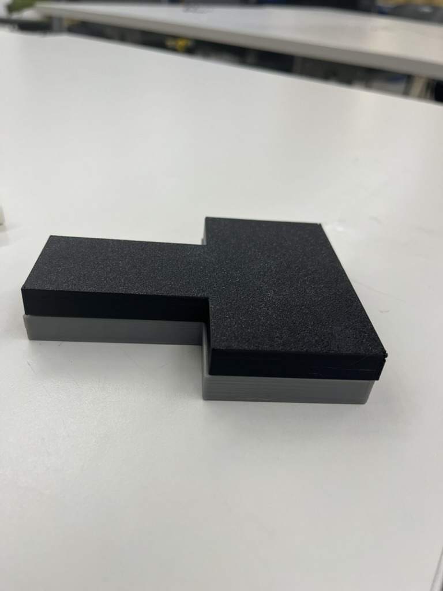
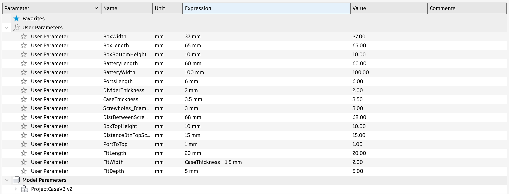
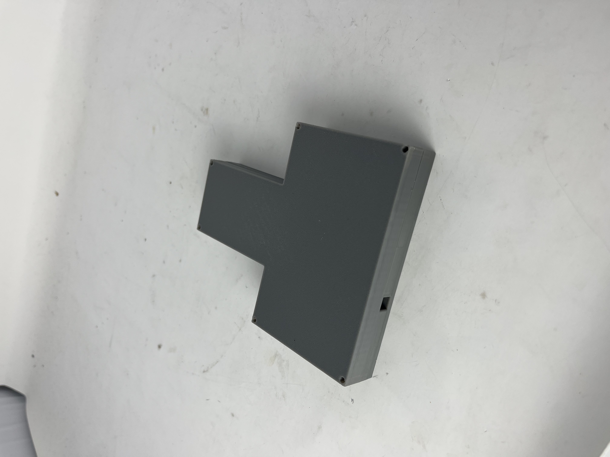

<div class="textcontainer">
<p class="margin"> </p>
<h3>Week 5: 3D Design & Printing</h3>
<h3 class="title">3D Design</h3>
<p>
For 3D printing I decided to print a case for my microcontroller
and battery. It is a simple design that I would attach to my bike
in the water bottle holder. It has two compartments, one for the
microcontroller and one for the battery. I also added a hole for the wires
from sensors and actuators.<br>
In the first iteration I underestimated the distances and ended up with a
relatively small case. The screw holes were barely visible. See below photos
of printed case.
</p>
<br>
<div style="display: flex; justify-content: center; gap: 20px; max-width: 100%;">
<div style="text-align: center; max-width: 250px;">

<p style="margin-top: 8px; font-size: 14px; color: #c9c9c9;">Bottom Body</p>
</div>
<div style="text-align: center; max-width: 250px;">

<p style="margin-top: 8px; font-size: 14px; color: #c9c9c9;">Top Body
</p>
</div>
<div style="text-align: center; max-width: 250px;">

<p style="margin-top: 8px; font-size: 14px; color: #c9c9c9;">Complete Case</p>
</div>
</div>
<br>
<p>
In the second iteration I increased the size of the case and the screw holes and added a
clearance fit. I will make further adjustments when I test this during the MVP week.
See images below for parameters and the final case:
</p>
<br>
<div style="display: flex; justify-content: center; align-items: center; gap: 20px; max-width: 800px; margin: auto;">
<div style="text-align: center; flex: 1.2;">

<p style="margin-top: 8px; font-size: 14px; color: #c9c9c9;">Sketch parameters of the case</p>
</div>
<div style="text-align: center; flex: 1;">

<p style="margin-top: 8px; font-size: 14px; color: #c9c9c9;">Full case</p>
</div>
</div>
<br>
<div style="display: flex; justify-content: center; gap: 20px; max-width: 100%;">
<div style="text-align: center; max-width: 250px;">
<p style="margin-top: 8px; font-size: 14px; color: #c9c9c9;"> Bottom body </p>
</div>
<div style="text-align: center; max-width: 250px;">
<p style="margin-top: 8px; font-size: 14px; color: #c9c9c9;">Top body</p>
</div>
</div>
<br>
<p>
If interested, you can download my STL files for the case below:
</p>
<div style="display: flex; gap: 10px;">
<a href="CaseBottomv2.stl" download>
<button style="padding: 10px 20px; font-size: 16px; cursor: pointer; background-color: crimson; color: white; border: none; border-radius: 8px;">Download Bottom STL</button>
</a>
<a href="CaseTopv2.stl" download>
<button style="padding: 10px 20px; font-size: 16px; cursor: pointer; background-color: crimson; color: white; border: none; border-radius: 8px;">Download Top STL</button>
</a>
</div>
<br>
<h3 class="title">Photogrammetry</h3>
<p>
I used the iphone app polycam to scan my bike helmet (see video below).
The app uses photos to create the 3D mesh (photgrammetry) and has a very friendly user interface.
But this comes at the cost of
functionality. It is very limited in what you can do with the
actual model after processing is complete. "Ckeaning up" the model is
almost impossible. Only the crop functionality proved helpful but drawing polygons
to cutout unwanted background could have been easier and more accurate than explicit planes.<br><br>
I did the scanning at night and had to do it multiple times
because the lightinng was hard to work with. It was very easy ti cas a shadow on the object.
Also figured in the process that polycam only allows you to go back two steps after
editing. For example, if you crop the object multiple times and crop too much, you can only go back two steps
and have to start over.<br><br>
The app also has a very limited export functionality unless you pay for the pro version.
You can only export the model as an GLTF file, photos or video. I chose video.
</p>
<div class="container">
<div class="d-flex justify-content-center">
<video width="80%" controls class="video-size">
<source src="photogrametry_example.MP4" type="video/mp4">
Your browser does not support the video tag.
</video>
</div>
</div>
<br>
<h3 class="title">Final Project Update</h3>
<p>
As part of this week's assignment, I updated my <a style="color: crimson;" href="../13_finalproject">Final Project</a> page with a
design idea, Bill of Materials (BOM) and a rough timeline.
</p>
</div>